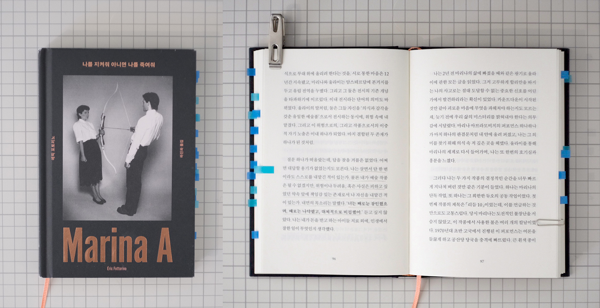

에릭 포토리노 『나를 지켜줘 아니면 나를 죽여줘 Marina A』

Notes
남자는 활시위를 강하게 당기고 있고, 화살촉은 마주하고 있는 여자의 왼쪽 심장을 겨누고 있는 사진 한 장. 그리고 ‘나를 지켜줘 아니면 나를 죽여줘’라는 카피 한 줄. 서점의 추천 도서이기도 했지만, 무엇보다도 이 책의 표지가 눈길을 잡아챘다. 예술에 대한 고찰을 한 번도 해본 적 없던 평범한 남성이 한 예술가를 만나게 되면서 세상을 다른 방식으로 바라보고 끊임없이 질문하게 되는 일종의 성장 소설. 픽션과 논픽션의 경계에 놓여있는 이 작품은 되려 주인공의 옆자리에 나를 나란히 서게 만들었다. 그와 함께 나는 마리나A의 퍼포먼스를 지켜보았고 그의 생각 위에 내 생각을 얹어보기도 했으며, 그와 함께 질문했고, 대답을 고민했다. 비슷한 결론이 섰다, ‘타성과 편안, 확신이 흔들리는 것을 두려워하지 않을 것. 삶을 살아가고 느끼는 데에는 바로크식 방법도 존재한다는 것’ 말이다.
Quotes
곧게 편 검지 끝을 그을리던 촛불이 갑자기 다른 의미로 다가왔다. 그것은 일종의 희망이었다. 불이 붙어 있는 한, 살아 있는 한, 삶의 불꽃이 남아 있는 한, 기어코 살아가고자 하는 의지가 있는 한 여전히 너울거리는 희망이었다. -26p
끝까지 당겨진 활을 사이에 두고, 두 사람은 마수 선 채 미동도 없었다. 그녀의 눈빛은 말한다. ‘나를 지켜줘.’ 이렇게도 읽힌다. ‘나를 죽여줘. 난 준비됐어.’ -34p
그녀는 그들에게 자신에게 가장 귀한 것, 관심과 시간을 내주었다. 시간이 시선을 변화시키고 그 시선들을 더 깊은 곳으로 인도한다고 믿은 그녀는 돈과 시장경제가 지배하고 모바일 기기가 앗아 간 시간에 맞섰다. -39p
그 세르비아인 예술가는 내 안에, 세상을 바라보는 방식 자체에 균열을 일으켰다. 이제 다른 방식으로 눈을 떠야 했다. -59p
나는 살명서 단 한 번이라도 스스로를 내맡긴 적이 있는가. 물론 내가 예술 작품은 될 수 없겠지만, 위험이나 두려움, 혹은 사실은 피하고 싶었던 약속 앞에 책임감 있는 존재로서 나 자신을 내맡긴 적이 있는가. 내면의 목소리는 말했다. ‘너는 때로는 강인했으며, 때로는 나약했고, 대체적으로 비겁했어.’-96p
“먼저 가세요"라고 말하려면, 우선 나부터 잘 지내고, 스스로를 충분히 돌봐야 한다. 지난 며칠간의 깨달음이 명화하게 정리됐다. “먼저 가세요"라고 말하지 못했다면, 그건 내가 잘 지내고 있지 않다는 뜻이었다. -133p
마리나A는 자신도 모르게 내 신경을 건드렸다. 그리고 내 안의, 깊이 파묻혀 수면 위로 끄집어내는 데 평생이 요구되는 감각을 파헤쳐 냈다. 그리고 그 덕에 나는 의심하는 것이 스스로를 마주하는 유일한 방법이라는 것, 스스로의 나약함을 인정해야만 한다는 것, 그리고 나를 필요로 하는 무방비 상태의 영혼과 육체를 마주한 나의 깊은 감정에 귀 기울일 줄 알아야 한다는 것을 받아들였다. 빈손이든 치료도구를 들고 있든, 혹은 한 조각의 케이크를 들고 있든 상관없이, 타인의 나약함에 손을 내밀기 위해서라면. -210p
밀란 쿤데라의 <소설의 기술> 몇 페이지를 다시 읽었다. 쿤데라는 소설사를 세 시기로 구분했다. 호메로스에서 돈키호테까지, 주인공이 ‘무엇을 하는가’에 따라 이야기가 전개되던 시대. 조이스에서 버지니아 울프까지, 행동이 아니라 ‘무엇을 생각하는가’에 초점을 맞추던 시대. 그리고 카프카의 시대, 즉 인물이 무엇을 하거나 무엇을 생각하든 더 이상 중요하지 않고, 압도적인 위협 앞에서 그는 얼마만큼의 자유를 지니는지가 유일한 물음이 되는 시대. -220p(작가의 말 중에서)
synopsis
외과 의사인 폴 가셰는 크리스마스와 새해 사이, 아내 모드와 함께 열다섯 살 생일을 앞둔 딸 리사를 데리고 피렌체로 여행을 가게 된다. 그는 그곳에서 타오르는 촛불을 앞에 둔 새까만 머리카락의 신비로운 여인이 그를 똑바로 응시하는 포스터를 마주하게 되고, 버스 정류장에서부터 시장 골목까지 도시 곳곳에 붙어 있던 그 포스터를 보면서 그녀에 대해 궁금해지기 시작한다. 마침 피렌체의 한 고궁에서 그녀의 회고전이 열리고 있었고, 그는 세계적인 퍼포먼스 예술가 마리나 아브라모비치(마리나A)와 그녀의 퍼포먼스를 보게 된다. 이러한 예술적인 경험은 세상을 바라보는 그의 태도를 변하게 했고, 이후 오랫동안 그녀의 예술 세계에 집착하게 된다.
그리고 2년 후, 그 누구보다 강하게 그의 마음 속 깊은 곳을 울렸던 그녀에 대한 집착이 사라지고 삶이 정상 궤도로 돌아왔을 때, 코로나19 팬데믹이 인류의 삶을 멈춰 세웠다. 사회적 거리두기. 바이러스가 우리를 서로 멀어지게 하고, 가장 가까운 이들과도 거리를 만들게 두면서 잠시 잊고 지낸 마리나A와 그녀의 퍼포먼스를 다시금 생각하게 된다. 패데믹의 시대, 마리나A의 퍼포먼스를 다시 불러 일으킴으로써, 그는 오랫동안 잊고 지내던 사실을 알게 된다. 진실에 도달하는 길은 하나가 아니라는 것. 위험과 시행착오, 실패는 우리 존재의 본질이니 우리 앞에 고통스러운 시련이 기다리더라도 포기하거나 낙담하지 말고, 대담함과 호기심으로 꿋꿋이 걸어나가야 한다는 것이다.
“마리나 아브라모비치는 나를 불길처럼 관통했다. 2018년 겨울, 피렌체 거리에서 그녀의 압도적인 이미지를 마주한 순간, 나는 깊은 충격을 받았다. 그 경험은 너무 강렬해, 결국 소설로 옮겨 적지 않고는 견딜 수 없었다. 그녀의 예술은 말 없는 언어였다. 몸과 몸이 부딪치고, 때로는 스스로를 상하게 하며, 마침내 거리를 두고 맺는 대화. 나는 그 언어를 번역할 수 없었지만, 분명히 내게 말을 걸고 있었다. 마리나는 자신을 작품으로, 그저 하나의 대상으로 내맡겼다. 때로는 목숨을 건 위험 속에서도 관객에게 진실을 드러내려 했다. 나는 예술이 숨겨진 진실을 낳는 힘이라고 믿는다. 우리가 즉각적으로는 알 수 없고, 또 보지 못하는 진실을”. -에릭 포토리노 언론 인터뷰에서